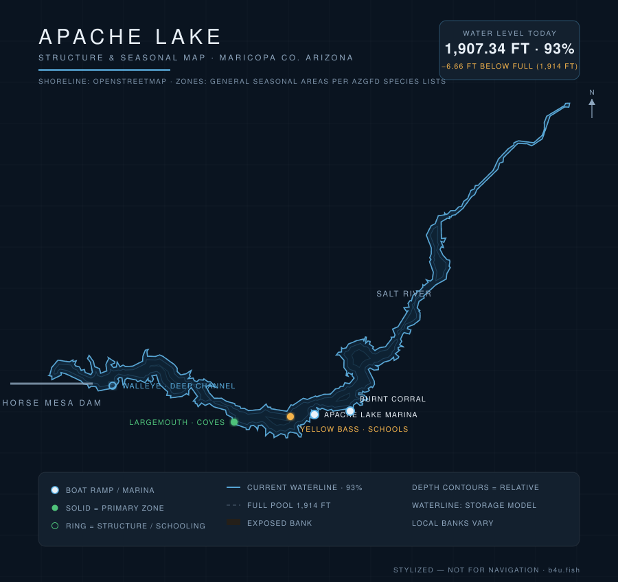

Apache is the wild middle child of the Salt River chain — remote, scenic, and lightly pressured, with bass, walleye, and yellow bass in deep canyon water. Here's what to know before you launch — plus live conditions updated every day.

Waterline reflects the latest level reading (stylized — not for navigation). Fish zones are general seasonal areas, not exact spots, compiled from AZGFD species lists & lake guides and published Arizona fishing reports. Water data: SRP/DWR, CAP, USACE.
Current water level, percent-full, weather, solunar bite windows, and a daily fishing score for Apache are tracked on the b4u.fish dashboard.
Tucked between Roosevelt and Canyon below Horse Mesa Dam, Apache Lake runs deep and narrow through canyon country in the Superstition Wilderness area. Its remoteness keeps crowds down and rewards anglers willing to make the drive with clear water, steep walls, and a varied fishery. Like the rest of the Salt River system, levels are SRP-managed.
Bass move up on the rock to spawn; cleared, warming pockets fish best. A great window before summer heat.
Deep, clear water means an early/late bite and deeper midday fish. Walleye and smallmouth reward vertical presentations on structure.
Cooling water concentrates bait in the canyon; slow down for smallmouth and walleye on rock.
The b4u.fish dashboard combines moon phase, solunar major/minor windows, wind, cloud cover, water temperature, and barometric stability into a single daily score — handy when the lake is a long drive away.
The dependable route is SR-188 — reached via SR-87 (Beeline) or US-60 through Globe — then SR-88 west to the Apache Lake marina turnoff. The unpaved Apache Trail (SR-88) stretch from the Roosevelt side is scenic but can be rough or weather-affected, so check road conditions at az511.gov before you go. The lake is in Tonto National Forest (Tonto Pass / day-use fee).
Full pool is 1,914 ft. Live elevation and percent-full are on the b4u.fish dashboard, from the SRP/DWR daily report.
Largemouth and smallmouth bass, yellow bass, walleye, catfish, crappie, and sunfish.
Burnt Corral and the Apache Lake Marina — see the dashboard for current status.
SR-188 to SR-88 west to the marina turnoff. Check az511.gov for Apache Trail road conditions.